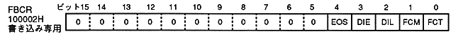

Frame buffer change trigger bit: frame buffer change trigger (FCT), bit 0
VBE | FCM | FCT | switching time | ||||||||||||||||||||||||||||
0 | 0 | 0 | changes every 1/60 seconds | ||||||||||||||||||||||||||||
0 | 0 | 1 | − | ||||||||||||||||||||||||||||
0 | 1 | 0 | Erase next field | ||||||||||||||||||||||||||||
0 | 1 | 1 | Change in next field | ||||||||||||||||||||||||||||
1 | 0 | 0 | − | ||||||||||||||||||||||||||||
1 | 0 | 1 | − | ||||||||||||||||||||||||||||
1 | 1 | 0 | − | ||||||||||||||||||||||||||||
1 | 1 | 1 | Erase with V blank, |